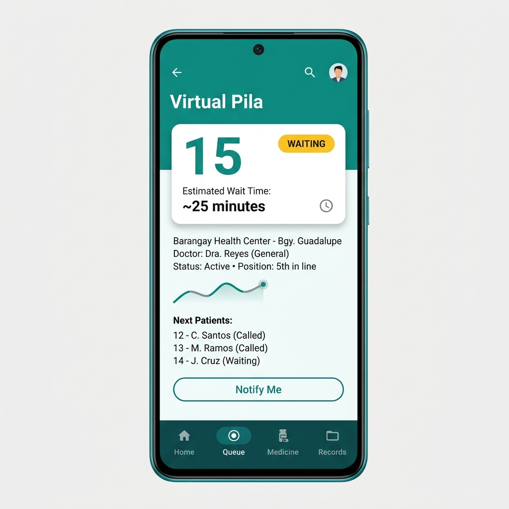
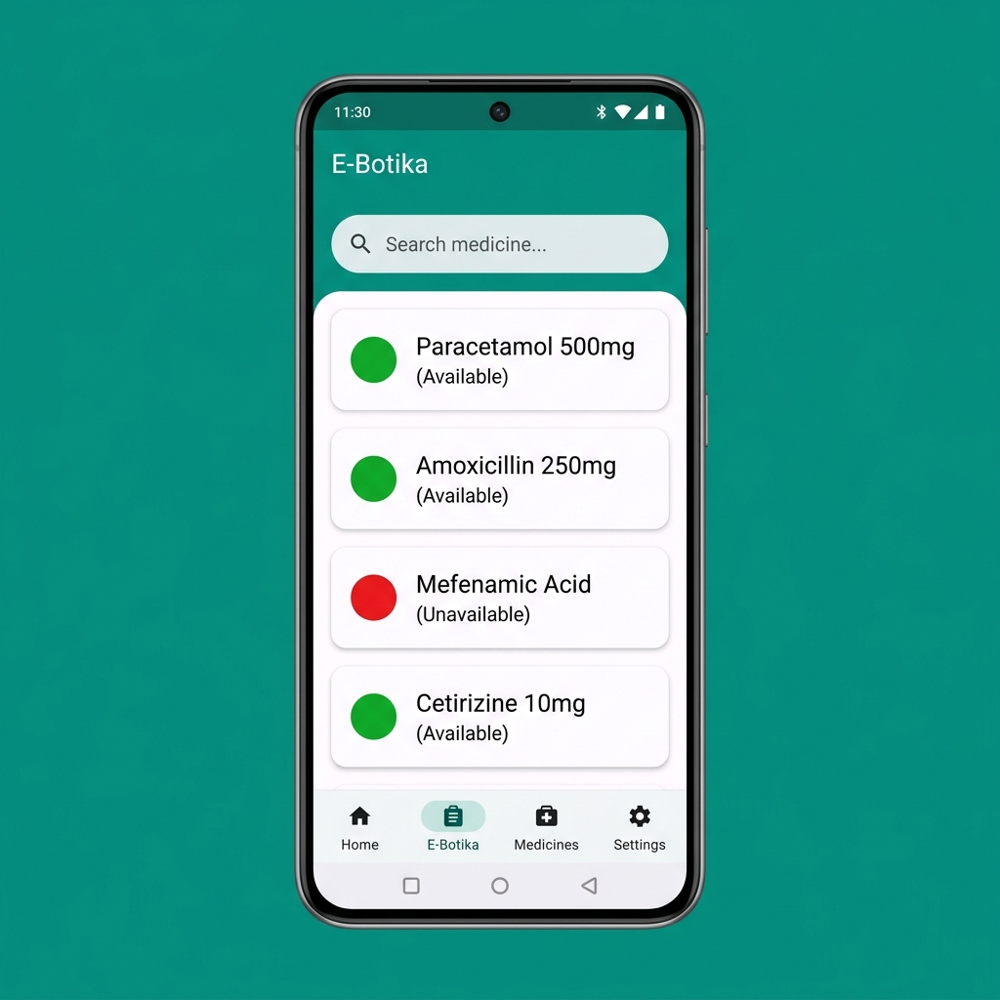
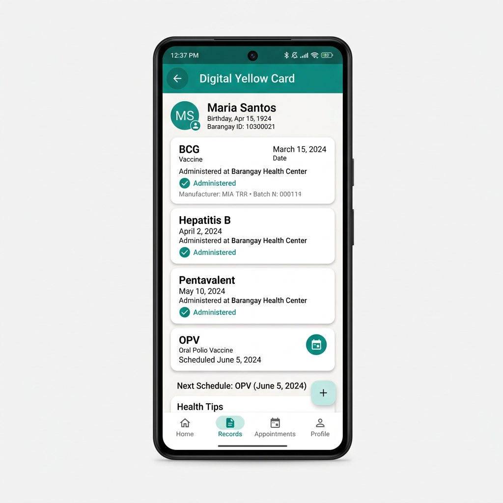

BarrioMed digitizes Philippine barangay health centers — virtual queues, medicine availability, digital immunization records, and e-prescriptions — all working even without internet.

From queue management to prescription tracking — BarrioMed handles it all, designed for the real constraints of Philippine public healthcare.
Get your queue number from home — even offline. The server assigns the real slot when connectivity returns. No more lining up at dawn.
Check medicine availability before going to the health center. Traffic-light indicators — green for available, red for out of stock — updated live by staff.
Immunization records for adults and infants, replacing fragile paper cards. Never lose your vaccination history again — it's always on your phone.
Digital prescriptions with a QR code for pharmacy scanning. Doctors create, patients carry, pharmacies verify — no more illegible handwriting.
Structured visit notes with vitals, linked to the patient's full history. Doctors can review past consultations for continuity of care.
A glimpse into the key screens that residents, doctors, and staff interact with daily.
Queue number assignment, even offline

Real-time medicine availability

Vaccination records on your phone
Every layer chosen for reliability, performance, and the realities of barangay-level connectivity.
Expo managed workflow
PostgreSQL + Auth + Realtime
Deno serverless runtime
DB-layer access control
CI/CD APK generation
Compliant with the Philippine Data Privacy Act of 2012 (RA 10173). Security is enforced at every layer — not just the app.
Download the BarrioMed Android app — free, offline-ready, and built for Filipino communities.
Download APK for Android